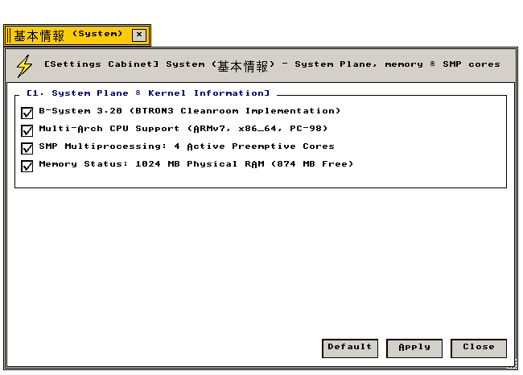

システム情報 (System)
BTRON 3.20 カーネル · SMP マルチコア · 物理メモリマップ · CPUアーキテクチャ
カーネル仕様、プリエンプティブSMPコア構成、物理メモリ配置、CPUアーキテクチャ情報の技術仕様
"Kernel execution state, preemptive symmetric multiprocessing cores, and physical address space maps."
← 設定フォルダ (Settings Folder Index)
システム情報（System） — BTRON3 SPEC 3.20仕様準拠カーネル情報、マルチアーキテクチャCPUサポート、SMPマルチプロセッシング状態、物理RAM割り当て状態を表示・管理する設定アプレット。
"Operating system kernel status: architecture versioning, SMP scheduling topology, and memory management statistics."
画面プレビュー (Screen Preview)

実機描画フレームバッファより自動抽出された透過基本情報設定ウィンドウ (Native Headless GDEV Capture)
概要 (Overview)
BTRON3 SPEC 3.20仕様準拠カーネル情報、マルチアーキテクチャCPUサポート、SMPマルチプロセッシング状態、物理RAM割り当て状態を表示・管理する設定アプレット。
"Operating system kernel status: architecture versioning, SMP scheduling topology, and memory management statistics."
基本操作仕様 (Operational Specifications)：
・[標準 (Default)]：工場出荷時の初期設定に復元します。
・[適用 (Apply)]：設定変更を確定し、システム状態へ反映します。
・[閉じる (Close)]：設定ウィンドウを破棄します（cls_wnd()）。
1. カーネルアーキテクチャとマルチプロセッシング (Kernel Architecture & SMP)
OSカーネルバージョン、プロセッサアーキテクチャ、物理メモリ容量の仕様。
"Core kernel build identifiers, hardware architecture abstractions, and active memory allocation metrics."
| 設定項目・機能名 |
動作概要と視覚仕様 (Functional Specification) |
技術仕様・幾何学構造 (Technical / C99 Definition) |
B-System 3.20 (BTRON3 Cleanroom Implementation)
BTRON3 3.20 準拠カーネル |
坂村健博士提唱のBTRON3 Specification 3.20に完全準拠したクリーンルーム実装カーネル。 |
カーネル仕様: BTRON3 Ver 3.20
C99: g_state_system.checks[0] |
Multi-Arch CPU Support (ARMv7, x86_64, PC-98)
マルチアーキテクチャ対応 |
ARM Cortex-A7/A53、x86_64 PC/AT、NEC PC-9801/9821アーキテクチャへ同一ソースコードからビルド対応。 |
ターゲット: ARM32 / x86_64 / PC-98
C99: g_state_system.checks[1] |
SMP Multiprocessing: 4 Active Preemptive Cores
4コア対称型マルチプロセッシング |
4基のCPUコアに対してプリエンプティブタスクスケジューラを稼働させ、負荷分散を実現します。 |
スケジューラ: 優先度駆動プリエンプティブ
C99: g_state_system.checks[2] |
Physical RAM Status: 1024 MB (874 MB Free)
物理メモリ管理状態 |
1024MBの物理RAMをページング管理し、カーネルおよびアプリケーションへ動的割り当てを行います。 |
メモリプール: src/kernel/memory.c
C99: g_state_system.checks[3] |
3. 全設定パラメータ仕様一覧 (Configuration Parameter Specifications)
システム情報が提供するすべての設定要素、初期値、およびC99内部シンボル。
"Comprehensive parameter specification table: indexing all UI widget states, factory defaults, and underlying C99 data symbols."
| セクション |
パラメータ名 / UI要素 |
標準値 (Default) |
設定値 / 選択肢 |
C99 内部変数・シンボル |
| [1] カーネル・ハードウェア |
B-System 3.20 Kernel |
有効 (TRUE) |
チェックボックス |
g_state_system.checks[0] |
| [1] カーネル・ハードウェア |
Multi-Arch Support |
有効 (TRUE) |
チェックボックス |
g_state_system.checks[1] |
| [1] カーネル・ハードウェア |
SMP Multiprocessing |
有効 (TRUE) |
チェックボックス |
g_state_system.checks[2] |
| [1] カーネル・ハードウェア |
Physical RAM Status |
有効 (TRUE) |
チェックボックス |
g_state_system.checks[3] |
| アクション制御 |
[ 標準 (Default) ] |
— |
初期設定へ復元 |
全フラグTRUEリセット |
| アクション制御 |
[ 適用 (Apply) ] |
— |
変更確定と再描画 |
is_dirty = FALSE, redraw_all_windows() |
| アクション制御 |
[ 閉じる (Close) ] |
— |
ウィンドウ破棄 |
cls_wnd(wnd) |
関連コンポーネント (Related Components)